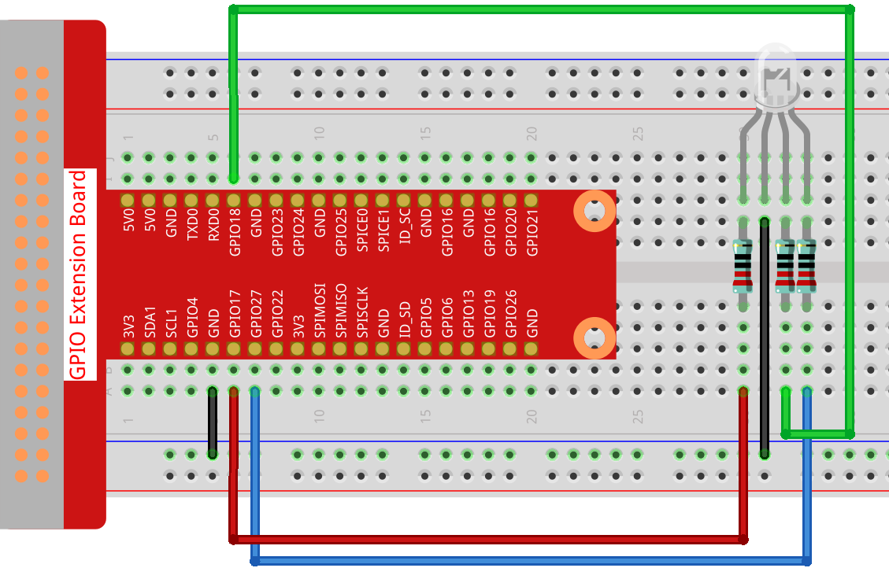

Note
Bonjour et bienvenue dans la communauté des passionnés de SunFounder Raspberry Pi, Arduino et ESP32 sur Facebook ! Plongez plus profondément dans le monde du Raspberry Pi, de l’Arduino et de l’ESP32 avec d’autres passionnés.
Pourquoi nous rejoindre ?
Support d’experts : Résolvez les problèmes après-vente et les défis techniques grâce à l’aide de notre communauté et de notre équipe.
Apprenez & Partagez : Échangez des astuces et des tutoriels pour améliorer vos compétences.
Aperçus exclusifs : Bénéficiez d’un accès anticipé aux annonces de nouveaux produits et à des avant-premières.
Réductions spéciales : Profitez de réductions exclusives sur nos derniers produits.
Promotions festives et concours : Participez à des concours et des promotions spéciales lors des fêtes.
👉 Prêt à explorer et à créer avec nous ? Cliquez sur [Ici] et rejoignez-nous dès aujourd’hui !
1.1.2 LED RGB
Introduction
Dans cette leçon, nous allons apprendre à utiliser une LED RGB pour afficher une variété de couleurs en utilisant la programmation.
Composants

Principe
PWM
La modulation de largeur d’impulsion (PWM) est une technique permettant d’obtenir des résultats analogiques à l’aide de moyens numériques. Le contrôle numérique est utilisé pour créer une onde carrée, un signal alternant entre marche et arrêt. Ce schéma marche-arrêt peut simuler des tensions intermédiaires entre le niveau de tension maximum (5 Volts) et la tension nulle (0 Volts) en modifiant la durée pendant laquelle le signal reste actif par rapport à celle pendant laquelle il reste inactif. La durée d’activation est appelée « largeur d’impulsion ». Pour obtenir différentes valeurs analogiques, il suffit de moduler cette largeur. Si vous répétez ce schéma marche-arrêt suffisamment rapidement avec un dispositif tel qu’une LED, le résultat sera perçu comme une tension constante contrôlant la luminosité de la LED.
Cycle de service
Le cycle de service correspond au pourcentage d’une période durant laquelle un signal est actif. Une période est le temps nécessaire pour qu’un signal effectue un cycle complet marche-arrêt. La formule suivante exprime le cycle de service :

Où D est le cycle de service, T est la durée d’activation du signal, et P est la période totale du signal. Ainsi, un cycle de service de 60 % signifie que le signal est actif 60 % du temps et inactif 40 % du temps. La durée d’activation pour un cycle de service de 60 % peut être une fraction de seconde, une journée, ou même une semaine, selon la durée de la période.

LED RGB

Les trois couleurs primaires de la LED RGB peuvent se mélanger pour produire diverses nuances en ajustant leur intensité. La luminosité de chaque LED peut être ajustée à l’aide du PWM. Le Raspberry Pi ne dispose que d’un seul canal pour la sortie PWM matérielle, mais il en faut trois pour contrôler la LED RGB, ce qui complique son contrôle via le PWM matériel. Heureusement, la bibliothèque softPwm simule le PWM par programmation. Il suffit d’inclure le fichier d’en-tête softPwm.h (pour les utilisateurs du langage C) et d’utiliser l’API fournie pour contrôler facilement la LED RGB via une sortie PWM multicanal, permettant ainsi d’afficher une multitude de couleurs.
Schéma de câblage
Après avoir connecté les broches R, G et B à une résistance limitant le courant, connectez-les respectivement aux GPIO17, GPIO18 et GPIO27. La broche la plus longue (GND) de la LED se connecte à la masse (GND) du Raspberry Pi. Lorsque les trois broches reçoivent différentes valeurs PWM, la LED RGB affiche différentes couleurs.
T-Board Name |
physical |
wiringPi |
BCM |
GPIO17 |
Pin 11 |
0 |
17 |
GPIO18 |
Pin 12 |
1 |
18 |
GPIO27 |
Pin 13 |
2 |
27 |

Procédures expérimentales
Étape 1 : Construire le circuit.
{kind=link}
Étape 2 : Accéder au dossier contenant le code.
cd ~/davinci-kit-for-raspberry-pi/c/1.1.2/
Étape 3 : Compiler le code.
gcc 1.1.2_rgbLed.c -lwiringPi
Note
Lors de l’exécution de la commande « gcc », si l’option « -o » n’est pas spécifiée, le fichier exécutable sera nommé « a.out ».
Étape 4 : Exécuter le fichier exécutable.
sudo ./a.out
Après l’exécution du code, vous verrez la LED RGB afficher les couleurs rouge, vert, bleu, jaune, rose et cyan.
Note
Si le programme ne fonctionne pas après l’exécution, ou si un message d’erreur apparaît : « wiringPi.h: Aucun fichier ou répertoire de ce type », veuillez consulter : C code is not working?.
Code
#include <wiringPi.h>
#include <softPwm.h>
#include <stdio.h>
#define uchar unsigned char
#define LedPinRed 0
#define LedPinGreen 1
#define LedPinBlue 2
void ledInit(void){
softPwmCreate(LedPinRed, 0, 100);
softPwmCreate(LedPinGreen,0, 100);
softPwmCreate(LedPinBlue, 0, 100);
}
void ledColorSet(uchar r_val, uchar g_val, uchar b_val){
softPwmWrite(LedPinRed, r_val);
softPwmWrite(LedPinGreen, g_val);
softPwmWrite(LedPinBlue, b_val);
}
int main(void){
if(wiringPiSetup() == -1){ // lorsque l'initialisation de wiring échoue, affiche un message à l'écran
printf("setup wiringPi failed !");
return 1;
}
ledInit();
while(1){
printf("Red\n");
ledColorSet(0xff,0x00,0x00); //rouge
delay(500);
printf("Green\n");
ledColorSet(0x00,0xff,0x00); //vert
delay(500);
printf("Blue\n");
ledColorSet(0x00,0x00,0xff); //bleu
delay(500);
printf("Yellow\n");
ledColorSet(0xff,0xff,0x00); //jaune
delay(500);
printf("Purple\n");
ledColorSet(0xff,0x00,0xff); //violet
delay(500);
printf("Cyan\n");
ledColorSet(0xc0,0xff,0x3e); //cyan
delay(500);
}
return 0;
}
Explication du code
#include <softPwm.h>
Bibliothèque utilisée pour implémenter la fonction PWM via un logiciel.
void ledInit(void){
softPwmCreate(LedPinRed, 0, 100);
softPwmCreate(LedPinGreen,0, 100);
softPwmCreate(LedPinBlue, 0, 100);
}
Cette fonction permet de créer une broche PWM par programmation, et de définir sa période entre 0x100us et 100x100us.
Le prototype de la fonction softPwmCreate(LedPinRed, 0, 100) est le suivant :
int softPwmCreate(int pin,int initialValue,int pwmRange);
Paramètre pin : N’importe quelle broche GPIO du Raspberry Pi peut être définie comme une broche PWM.
Paramètre initialValue : La largeur d’impulsion initiale est égale à initialValue multiplié par 100us.
Paramètre pwmRange : La période du PWM est égale à pwmRange multiplié par 100us.
void ledColorSet(uchar r_val, uchar g_val, uchar b_val){
softPwmWrite(LedPinRed, r_val);
softPwmWrite(LedPinGreen, g_val);
softPwmWrite(LedPinBlue, b_val);
}
Cette fonction sert à définir les couleurs de la LED. En utilisant le système RGB, le paramètre formel r_val représente la luminosité du rouge, g_val celle du vert, et b_val celle du bleu.
Le prototype de la fonction softPwmWrite(LedPinBlue, b_val) est le suivant :
void softPwmWrite (int pin, int value) ;
Paramètre pin : N’importe quelle broche GPIO du Raspberry Pi peut être définie comme une broche PWM.
Paramètre value : La largeur d’impulsion du PWM est égale à value multiplié par 100us. Notez que value ne peut pas dépasser pwmRange, défini précédemment. Si value est supérieur à pwmRange, la valeur sera fixée à pwmRange.
ledColorSet(0xff,0x00,0x00);
Appel de la fonction définie précédemment. Écrit 0xff dans LedPinRed, 0x00 dans LedPinGreen et LedPinBlue. Seule la LED rouge s’allume après l’exécution de ce code. Si vous souhaitez allumer les LED d’une autre couleur, il suffit de modifier les paramètres.